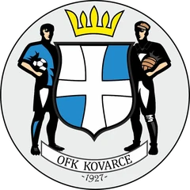

OFK Kovarce
Futbal v Kovarciach od roku 1927. Víťaz VII. ligy ObFZ Topoľčany 2025/26, teraz VI. liga Severovýchod, 14. miesto zo 16.
V kalendári: áčko dorast a žiaci dnes
November 2026
Posledné zápasy jesene
| po | ut | st | št | pi | so | ne |
|---|---|---|---|---|---|---|
| 1. novembraA-mužstvo: doma proti FK TJ Skačany, remíza 1:1 | ||||||
| 2. novembra | 3. novembra | 4. novembra | 5. novembra | 6. novembraU15: vonku proti TJ Slovan Bojná, remíza 3:3 | 7. novembraU19: vonku proti OFK Prašice, výhra 2:1 | 8. novembraA-mužstvo: doma proti TJ Tatran Uhrovec, výhra 2:1 |
| 9. novembra | 10. novembra | 11. novembra | 12. novembra | 13. novembra | 14. novembraU19: doma proti TJ Slovan Krušovce, výhra 4:0 | 15. novembraA-mužstvo: doma proti ŠK Vegum Dolné Vestenice, výhra 3:2 |
| 16. novembra | 17. novembra | 18. novembra, dnes | 19. novembra | 20. novembra | 21. novembra | 22. novembra |
| 23. novembra | 24. novembra | 25. novembra | 26. novembra | 27. novembra | 28. novembra | 29. novembra |
| 30. novembra |
- FK TJ SkačanyA-mužstvo · 13. kolo · doma Remíza, 1:1
- TJ Slovan BojnáU15 · 11. kolo · vonku Remíza, 3:3
- OFK PrašiceU19 · 14. kolo · vonku Výhra, 2:1
- TJ Tatran UhrovecA-mužstvo · 14. kolo · doma Výhra, 2:1
- TJ Slovan KrušovceU19 · 15. kolo · doma Výhra, 4:0
- ŠK Vegum Dolné VesteniceA-mužstvo · 15. kolo · doma Výhra, 3:2
Marec 2027
Zimná prestávka. Áčko začína v nedeľu 7. marca 2027 doma proti TJ Slovan Bojná.
| po | ut | st | št | pi | so | ne |
|---|---|---|---|---|---|---|
| 1. marca | 2. marca | 3. marca | 4. marca | 5. marca | 6. marcaU19: doma proti ŠC Chynorany, výkop 11:00 | 7. marcaA-mužstvo: doma proti TJ Slovan Bojná, výkop 14:30 |
| 8. marca | 9. marca | 10. marca | 11. marca | 12. marca | 13. marcaA-mužstvo: vonku proti TJ Družstevník Jacovce, výkop 14:30 | 14. marcaU19: vonku proti TJ Tatran Kamenec pod Vtáčnikom, výkop 11:00 |
| 15. marca | 16. marca | 17. marca | 18. marca | 19. marca | 20. marcaU19: doma proti ŠK Vegum Dolné Vestenice, výkop 11:30 | 21. marcaA-mužstvo: doma proti TJ Slovan Krušovce, výkop 15:00 |
| 22. marca | 23. marca | 24. marca | 25. marca | 26. marca | 27. marcaU15: vonku proti OTJ Horné Obdokovce, výkop 10:30U19: vonku proti TJ Nový Život Veľké Uherce, výkop 11:30 | 28. marcaA-mužstvo: doma proti Slovan Šimonovany-Partizánske, výkop 15:00 |
| 29. marca | 30. marca | 31. marca |
- ŠC ChynoranyU19 · 16. kolo · doma 11:00
- TJ Slovan BojnáA-mužstvo · 16. kolo · doma 14:30
- TJ Družstevník JacovceA-mužstvo · 17. kolo · vonku 14:30
- TJ Tatran Kamenec pod VtáčnikomU19 · 17. kolo · vonku 11:00
- ŠK Vegum Dolné VesteniceU19 · 18. kolo · doma 11:30
- TJ Slovan KrušovceA-mužstvo · 18. kolo · doma 15:00
- OTJ Horné ObdokovceU15 · 12. kolo · vonku 10:30
- TJ Nový Život Veľké UherceU19 · 19. kolo · vonku 11:30
- Slovan Šimonovany-PartizánskeA-mužstvo · 19. kolo · doma 15:00
VI. liga Severovýchod
| # | Tím | Z | V | R | P | Skóre | B |
|---|---|---|---|---|---|---|---|
| 1 | 15 | 12 | 3 | 0 | 39:13 | 39 | |
| 2 | 15 | 10 | 2 | 3 | 30:12 | 32 | |
| 3 | 15 | 7 | 4 | 4 | 46:19 | 25 | |
| 4 | 15 | 7 | 4 | 4 | 30:18 | 25 | |
| 5 | TJ Slovan Preseľany | 15 | 7 | 3 | 5 | 32:24 | 24 |
| 6 | 15 | 7 | 3 | 5 | 44:22 | 24 | |
| 7 | 15 | 7 | 2 | 6 | 17:18 | 23 | |
| 8 | 15 | 7 | 0 | 8 | 19:26 | 21 | |
| 9 | 15 | 6 | 2 | 7 | 32:30 | 20 | |
| 10 | 15 | 6 | 2 | 7 | 26:33 | 20 | |
| 11 | 15 | 5 | 3 | 7 | 22:38 | 18 | |
| 12 | 15 | 5 | 3 | 7 | 33:40 | 18 | |
| 13 | 15 | 4 | 4 | 7 | 25:34 | 16 | |
| 14 | 15 | 4 | 3 | 8 | 25:41 | 15 | |
| 15 | 15 | 4 | 3 | 8 | 19:32 | 15 | |
| 16 | 15 | 1 | 1 | 13 | 16:55 | 4 |

Dvaja futbalisti v znaku
Vpravo hráč z roku 1927, keď v obci vznikol prvý futbalový klub, v dobovom výstroji s čiapkou. Vľavo dnešný hráč v modro-bielom drese. Medzi nimi erb a koruna obce.
Klub a jeho história